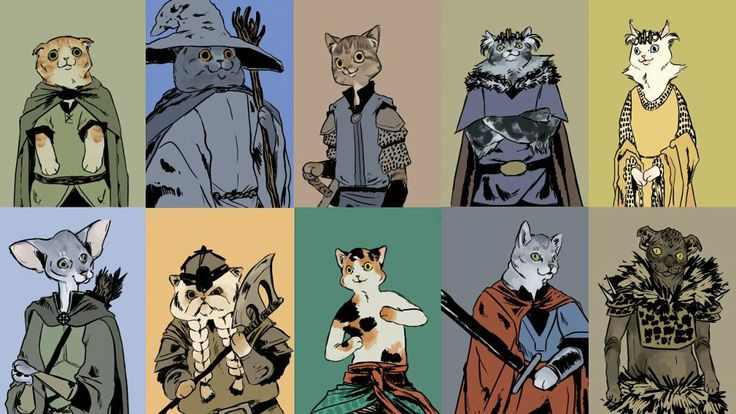

SECRET WIZARD’S
CHARACTER SELECT
[Discussion]
A guide to class selection for Pathfinder RPG


INDEX
Introduction
The largest challenge that new players face when they start playing Pathfinder, I have found, is picking the right class for their concept. Notoriously, Pathfinder has quite a few classes to pick - over 40 different classes at the time of writing - and not all of them are as straightforward as they look.
The objective of this guide is to help players select the class that will not only fit the concept they want to create, but also provide the experience they want to obtain from the game.
This guide does not intend to explain the reader how to play Pathfinder, but it does attempt to educate the reader on the basic notions required to analyze a class. It is assumed that the reader has passing knowledge of the rules of the game.
The scope is also limited. There are a couple of things that are not covered in this guide. These are:
- Maximum possible optimization. This guide is about building functional characters that can have a meaningful contribution to a campaign. It’s not about juicing every single aspect of a character.
- Multiclassing of any kind. This is an advanced character building strategy that is unnecessary to make a good, memorable and functional character that excels at its job.
- Prestige Classes. As there are way too many of these, they won’t be noted. In general, however, they tend to lack support as archetypes are preferred over them in order to specialize characters.
- Race choices. Choosing your character’s race is not as big of a deal as it seems. However, in order to reduce the scope of this guide, all proposed builds will deal with regular Human characters, avoiding racial feats and such to make them more adaptable.
- Non-Unchained versions of the Barbarian, Monk, Rogue and Summoner. The core Rogue and Summoner classes are widely considered design failures. The Unchained versions are better for the health of every table and will be covered in this guide. On the other hand, Monks are not beyond salvation, but their builds are usually not as straightforward as they seem and they don’t have much latitude to building other than a few relevant archetypes. For that reason, the Unchained Monk is preferred. The Unchained Barbarian is simply more friendly to beginners than the core Barbarian, and because, in my opinion, the core Barbarian relies too much on an exploit known as “Rage-cycling” for its viability.
- Exploits. A lot of strategies are considered exploits (or, more colloquially, “cheese”). Said cheese is assumed not to exist for the purpose of this guide.
- PFS-illegal items. Since the goal is to make something that’s useful for PFS, talk about PFS-illegal feats and archetypes will be omitted - except for the Antipaladin because I wouldn’t want to NOT cover a class.
- Third-party material. As much as I love it, for sake of ease of use, third-party material will not be noted. That being said, feel free to explore your options if you are interested! I may have some of my own stuff out there, so feel free to patronize. <3
HOW TO PICK YOUR CLASS
When you pick a class, you choose two things: the strengths and the weaknesses of your character.
If I were to choose to make, say a Paladin, it is easy to pick up the weaknesses of the class at first glance - low skill ranks per level, meaning out-of-combat utility will be low; spells are few and in-between, meaning it cannot be the focus of the class; most features deal with defeating evil, so tackling neutral foes (such as beasts or forces of nature) will leave you lacking; very little in the way of feats, so little chance to develop a specialized combat style; requirement to invest in Charisma in addition to other physical stats to function.
The strengths of the Paladin, however, also become clear: several defenses and immunities; excellent ability to bring down evil foes; quite powerful spell-list for a 4-level caster; and lack of necessity of feats to function well in combat.
The same type of analysis can be made with any class. If you are willing to take those weaknesses in exchange for those strengths, then you have found the class for you.
HOW TO BUILD YOUR CHARACTER
There’s no one right way to build a character. But there’s one method I recommend.
Once you found your class’ strengths and weaknesses, complement your strengths just enough, but cover your weaknesses in the most effective way possible.
If I were to make a Fighter, I’d know my weaknesses are related to out-of-combat utility, mobility and some low defenses in the kit, such as Will saves. I would build to try to give my character more ability to interact with the plot (Versatile Training option of Advanced Weapon Training works wonders in this aspect), I’d see about getting some mobility or positional options (perhaps choose a reach weapon or keep a ranged weapon at hand) and covering up my defenses ( picking up the Iron Will feat, for example). There will be holes in this, but that is because no class is perfect.
There is no one way to build a character. The decisions I made with the Fighter build above are circumstantial - on the Fighter page of this guide, you’ll see three builds that try to cover them in their own way. As long as you keep them in mind while building - either by ameliorating them or by taking a conscious decision to leave that gaping weakness, hoping for some other team-member to back you up in that sense - then you will be in control.
How to Read this Guide
Each class will be analyzed through several criteria, which is noted below in a sample template.
Class: Name of the class.
Source: Book where the class was first published.
BAB: The Base Attack Bonus of the class. This is a bonus to accuracy on attack rolls given to each character as they gain a level in the detailed class. There are three kinds - +½, +¾ and +1. A +1 BAB class will receive a +1 bonus to attack rolls every level, while +½ BAB receive +1 bonus to attack rolls every odd level, making the former better than the latter for combat purposes. +¾ BAB classes stand between those two in terms of effectiveness. Fighters, are, for example, a +1 BAB class, so at level 4, they’ll have +4 BAB. Meanwhile, Wizards are a +½ BAB class, so at level 4, they’ll have only +2 BAB. The gap widens further as Fighters reach level 6, when their BAB becomes +6/+1, gaining an additional attack. Meanwhile, a Wizard will only attain an additional attack at level 12, when their BAB reaches +6/+1. This base attack bonus is in addition to the attack bonus/penalty granted by your Strength modifier.
HD: The Hit Dice gained with each level of the class. This is the bonus hit points gained each time a character gains a level in the class. There are four kinds - 1d6, which is given to +½ BAB classes; 1d8, which is given to +¾ BAB classes; 1d10, which is given to +1 BAB classes; and 1d12, which is exclusive for Barbarians. As it can be appreciated, the higher the HD of a class, the better they can take a hit, so it makes them more suitable for heavy combat. HD is in addition to the HP gained/lost by your Constitution modifier.
Saves: As each character gains a level in a class, it receives a different bonus to each type of save - Fortitude, Reflex and Will. That bonus can be either High or Low for each save. For example, a Fighter has a High Fortitude save, but Low Reflex and Will saves. Meanwhile, a Wizard has a High Will save, but Low Fortitude and Reflex saves. These base saves are in addition to the bonus/penalty granted by Dexterity, Constitution and Wisdom modifiers. A short analysis of saves follows:
- Fortitude: Fortitude saves often deal with effects that compromise your character’s bodily functions. These can range from nauseation to death. For this reason, having low Fortitude saves is unviable.
- Reflex: Reflex saves often deal with effects that impair your character’s movement or outright deal damage. Most damage spells allow a Reflex save, but they still deal half damage on a successful save, so having good Reflex saves doesn’t mean too much… unless you got the Evasion feature, which prevents you from taking any damage if you pass the save. Most characters can do without high Reflex saves, but good HP is advised to pad up in case a sorcerer shoots a lightning bolt at your face.
- Will: Will saves often deal with effects that impair the mental functions of your character. These can range from effects that make you shakened, incurring few penalties, to effects that dominate your character’s mind. Will saves are, for this reason, quite important. However, unlike Fortitude saves, it is possible for a caster to prevent it from causing too much harm with a few spells in the right moment. Plus, a dominated caster could be easier to control for the party (“I grapple him”) than a dominated martial class, who might be harder to stop without violence. For this reason, Will saves are generally quite important. They are vital to Psychic classes, since they cannot cast while afflicted with a emotion-affecting condition.
Skill Ranks: As each character gains a level in a class, they also gain a number of skill ranks to assign among their skills. There are 4 types of Skill Rank progressions - 2 per level, 4 per level, 6 per level and 8 per level (exclusive to Rogues). These are specific to each class. These ranks are in addition the bonus/negative skill ranks per level granted by your Intelligence modifier.
Class Skills: Upon gaining a level in a class, a certain number of skills become Class Skills. This carries a simple benefit - the first time you put a rank in a Class Skill, you gain a permanent +3 bonus to that skill. For this reason, a class with Stealth as a Class Skill, for example, will usually have higher Stealth modifiers than a class without it. Other than that, it has no effect.
Spellcasting: Denotes whether the class has any sort of natural spellcasting ability. There are several kinds of spellcasting in the game. The types of spellcasting are detailed in APPENDIX I: Types of Spellcasting.
Ability Score Priority: Each class has a specific need of each ability score. While most of the classes, for example, want a good Constitution score because HP is always nice, they’ll have other priorities for other ability scores. For example, Wisdom grants a Monk higher AC, determines their number of Ki points and the efficiency of their Stunning Fists, so they’ll want more of it than a Wizard. There are 3 priorities: Very Important, which means you want a high score on it (15 or higher); Important, which means you want a good score on it (13 or higher); Neutral, which means any score is more or less fine on this. For a short summary of what each score does, look at APPENDIX II: Ability Scores.
Armor Proficiency: In this category the armors the class can use without penalty are listed. Other restrictions to armor use are also noted. For example, a Ranger starts off with light and medium armor proficiency, as well as proficiency with shields; but it must be also noted that if they use a heavy shield, they impair their combat casting (as they lose a free hand to cast in the heat of combat), and they cannot use heavy armor without losing their Combat Style Feats and Evasion.
Weapon Proficiency: In this category, the weapons the class can use without penalty are listed.
Notable Features: While it is beyond the scope of this guide to list each feature of each class, the most defining features will be listed in this category.
Challenges: This category lists the many challenges each class has. I consider this especially important to class selection, as what a class struggles with is what defines each one of them.
Notable Archetypes: Archetypes are modifications that can be placed upon classes. An archetype replaces a number of features from the original class in exchange for others. These can change the functioning of a whole class. While there are too many archetypes for this guide to list, some archetypes that provide radical changes to playstyle and mechanics will be listed.
Build Ideas: Another extremely subjective category - this lists three types of builds that are suited for each class. While they won’t comprehend every single alternative each class has, these are just builds that easily come together for each class. Additionally, these roles will also list a set of important feats for the role. These will come with a link to a Sample Build.
- Sample Builds: All sample builds will show these characteristics, with the following assumptions -
- Race: Human (all builds are made with Humans to simplify process)
- Traits: All builds assume 2 traits given to the character upon character creation.
- FCB: The favorite Favored Class Bonus to pick with the build.
- Ability Scores: All ability scores will be listed assuming the 20 point buy system, which is common in Pathfinder Society play and many tables.
- Gear: Usually an outline of which weapon/armor is ideal for this playstyle.
- Feats and Talents: All choices of feats, talents, powers, etc. up to level 12. Spells are not listed. Important feats will receive a note.
MAIN CLASS INDEX BY RULEBOOK |
CORE RULEBOOK
- Barbarian (see Barbarian Unchained)
- Bard - Buffing support class, with some casting, some combat proficiency and great number of useful skill-related abilities
- Cleric - Divine full-caster with a focus on support, with excellent spellcasting and utility and some combat readiness.
- Druid - Divine full-caster with focus on versatility, using wild shape to turn into powerful or nimble creatures and calling for the aid of the forest.
- Fighter - Heavy martial with specialization focus, with an overwhelming plethora of feats to guide the build.
- Monk (see Monk Unchained)
- Paladin - Heavy martial with support and defensive features, with some spellcasting to boost effectivity. Features oriented towards defeating Evil creatures.
- Ranger - Heavy martial with wilderness skills, supplemented by lesser magic and powerful combat styles.
- Rogue (see Rogue Unchained)
- Sorcerer - Full arcane spellcaster, powered by a magical lineage with deeper magical reserves than most casters.
- Wizard - Full arcane spellcaster, well versed in casting incredibly powerful magic.
PATHFINDER UNCHAINED
- Barbarian Unchained - Damage resistant martial, with several abilities that increase damage on-demand and grant good defensive measures.
- Monk Unchained - Full martial class with a focus on mobility and avoidance, with mystical abilities that it can use to boost its powers.
- Rogue Unchained - Full martial with focus on tactical attacks, with lots of skill-based tools to help outside of combat.
- Summoner Unchained - Support pet class, with access to powerful summons and a customizable Eidolon all backed up by buff and debuff spells.
ADVANCED PLAYER’S GUIDE
- Alchemist - Generalist class, using limited resources (bombs, extracts, mutagen and alchemical items) to fulfill different class roles throughout the day.
- Antipaladin - Heavy martial with debuffing and defensive features, with some spellcasting to boost effectivity. Features oriented towards defeating Good creatures.
- Cavalier - Heavy martial with mounted focus, with additional tools to grant it tactical utility. Note that this class has unmounted options as well.
- Inquisitor - Self-buff support class, team oriented, versatile, single target damage with some casting
- Oracle - Full divine spellcaster, with spontaneous casting and class features that can allow you to specialize in many different builds.
- Summoner (see Summoner Unchained)
- Witch - Full arcane spellcaster, with heavy debuffing/buffing abilities and spells. Can be a semi-decent healer as well.
ULTIMATE COMBAT
- Gunslinger - Full martial with a focus on firearms, excelling at short-to-mid range engagement.
- Ninja - Skilled martial with a focus on tactical attacks, with a wide range of skills and innate magical talent for subterfuge and combat.
- Samurai
ULTIMATE MAGIC
- Magus - Hybrid warrior and spellcaster, using its features to weave casting and combat seamlessly.
ADVANCED CLASS GUIDE
- Arcanist - Full arcane spellcaster, with hybrid prepared-spontaneous spellcasting and features that allow a series of tricks for utility and spell-boosting.
- Bloodrager - Heavy martial with magical abilities, with defensive and offensive-oriented abilities.
- Brawler - Full martial class with a focus on improvisation, with an emphasis on combat maneuvers and quick punches.
- Hunter
- Investigator - Intelligence focused martial class, with alchemical casting and strong skill support.
- Shaman
- Skald - Hybrid Martial class with a focus on support, with some casting, decent combat proficiency and great number of useful skill-related abilities.
- Slayer
- Swashbuckler - Evasive Martial, delivering swift attacks while using expert fencing techniques to parry and counterattack their foes.
- Warpriest - Durable martial with up to 6th level cleric spells. Versatile, with powers from blessing and fervor class features. Progressive damage dice on one or several weapons of choice.
OCCULT ADVENTURES
- Kineticist - Elemental blaster, with a focus on ranged damage and moderate utility plus some options for melee.
- Medium - Variable Hybrid, able to shift roles as a damage dealer, defender, support, divine caster, skill user, or arcane caster as needed.
- Mesmerist - Control and support class that instill penalties on enemies, implants unusual buffs on allies, and casts mind-affecting and illusion spells.
- Occultist
- Psychic - Full psychic spellcaster, capable of wielding potent magical spells that are empowered by their unique disciplines.
- Spiritualist - Support pet class, with great buff and debuff spellcasting and the unmatched ability to scout through walls.
ULTIMATE INTRIGUE
- Vigilante - Highly customizable martial, with tons of skills and an adjustable Base Attack Bonus. It can also be a caster.
ULTIMATE WILDERNESS
- Shifter - Heavy martial with animal forms, shapeshifting powers supplemented by beneficial animal aspects.
CLASSES BY ALPHABETICAL ORDER |
CLASSES BY CASTING ABILITY |
Arcane Casters | Divine Casters | No Casting |
4-level 6-level 9-level | 4-level 6-level 9-level | |
Psychic Casters | Alchemical Users | Kineticist |
4-level 6-level 9-level | 6-level
|
|
CLASSES BY BASE ATTACK BONUS |
+½ BAB Less fit for combat | +¾ BAB Adequate for combat | +1 BAB Best fit for combat |
| | |
APPENDIX I: Types of Spellcasting.
LEVEL - Not all spellcasters can unlock the same amount of spells. There are 3 types of spellcasters: those who can unlock 4 levels of spells, those who can unlock 6 levels of spells, and those who can unlock 9 levels of spells. In way of example: Paladins can unlock 4 levels of spells, which makes them poor spellcasters; Bards can unlock 6 levels of spells, which makes them passable spellcasters; Wizards can unlock 9 levels of spells, which makes them very good spellcasters.
ABILITY SCORE - Each type of spellcasting is tied to an ability score. The higher that ability score, the better the character’s effectiveness and availability to cast spells. There are currently four ability scores that can be tied to casting - Intellect, Wisdom, Charisma and Constitution. A Wizard, for example, is an Intellect-based caster, so the higher the Intellect on the Wizard, the deadlier his fireballs will be.
MECHANIC - The easy way to explain how spellcasting works in Pathfinder is as follows: when you start the day, you have X spells you can cast throughout the day; at the end of the day, those X spells are replenished. While this is technically correct, each class has a different way of functioning. There are currently 4 mechanics of spellcasting -
- Prepared: A Prepared spellcaster knows a number of spells, but can only prepare so many spells to use per day, determined by spell slots of each level of spells they can cast. These spells can be prepared at the beginning of the day or at some other point, but it takes some time to do so (usually 1 hour to prepare all slots together or 15 minutes to prepare a single spell slot with a spell). Once a spell known takes up a prepared spell slot, that spell slot cannot be replaced until the end of the day.
- Learned: Learned Prepared casters know a number of spells determined by their studies. They can learn more spells by leveling up or performing certain actions - such as studying a scroll. A Wizard is a Learned Prepared caster.
- E.g.: Whisky the Wizard 1 knows Magic Missile, Color Spray, Mage Armor and Shield for level 1 spells. She prepares Magic Missile, Magic Missile, Mage Armor and Color Spray for the day, and leaves a prepared spell slot unused. Along the way, she finds a scroll of Burning Hands. She studies it and adds it to her spells known. Then she spends 15 minutes to prepare it, using the unused spell slot. After she casts Burning Hands, she cannot cast it again for the day as she has no free level 1 spell slots and hasn’t prepared it more than once.
- Gifted: Gifted Prepared casters know all the spells of a given level they could cast as soon as they gain spellcasting ability of that level. A Cleric is a Gifted Prepared caster.
- E.g.: Charlie the Cleric 1 knows all level 1 spells Clerics could know. Upon reaching level 3, he gains knowledge of all level 2 spells Clerics could know. He may prepare those spells and those spells only, and cannot learn more spells from scrolls nor spellbooks.
- Spontaneous: Unlike Prepared spellcasters, Spontaneous casters do not need to prepare their spells known in advance. They have a number of spell slots of each level, and at any time they want to cast a spell, they simply use up a spell slot of the corresponding level. However, Spontaneous casters usually have a low number of spells known and cannot learn more spells by any other means than leveling up. A Sorcerer is a Spontaneous caster.
- E.g.: Sierra the Sorcerer 1 knows Burning Hands and Magic Missile for level 1 spells. She has 4 level 1 spell slots per day. She cast Burning Hands after being surrounded by rats. Then she cast Magic Missile twice against a powerful enemy. She has 1 level 1 spell slot left for the day, with which she can cast either Burning Hands or Magic Missile.
- Hybrid: A special type of spontaneous caster. These casters can learn spells by leveling up or by reading scrolls or spellbooks. At the beginning of each day, they prepare a small selection of their spells known. After preparing those, they can use spell slots of the corresponding level to cast those spells interchangeably. An Arcanist is a Hybrid Spontaneous caster.
- E.g.: Alpha the Arcanist 1 knows Magic Missile, Mage Armor, Color Spray and Shield for level 1 spells. She has 2 level 1 prepared spells per day, so he decides to prepare Magic Missile and leave the other prepared spell slot unused. He has 3 level 1 spell slots per day, so he could cast Magic Missile three times if he so wanted. Along the day, he finds a scroll of Burning Hands. He studies it and adds Burning Hands to his list of spells known, and then he spends 15 minutes preparing Burning Hands in the free spell slot. After he does so, he can now use those 3 level 1 spell slots to cast any combination of Magic Missile or Burning Hands spells.
SOURCE - There are currently four sources of spellcasting in the game. These not only determine where the character draws its powers, but also determines some mechanical characteristics of its spellcasting. These are as follows -
- Arcane: Arcane spellcasting exploits the eldritch forces of magic. Unless otherwise noted, Arcane spellcasters suffer penalties if wearing armor. They also usually require a hand free to cast (although not always). For this reason, an Arcane spellcaster that plans on wearing heavy armor and using a sword and a heavy shield will have a hard time doing his job. Furthermore, concentration must be maintained to cast Arcane spells.
- Divine: Divine spellcasting is granted by a connection with deities. Unlike Arcane spellcasting, armor carries no penalties to Divine spellcasters. However, they still usually require a free hand to cast (although not always). Like Arcane spellcasters, they must concentrate to cast their spells. Additionally, Divine spellcasters usually have to fulfill other stipulations to maintain their powers - for example, if a Cleric loses her deity’s favor, she loses her spellcasting ability.
- Psychic: Psychic spellcasting is granted by innate mental prowess. Unlike Arcane or Divine spellcasting, no free hands are required to cast. Also, wearing armor carries no penalties to Psychic spellcasting. However, Psychic spellcasters must concentrate to cast spells, and have a harder time doing so than Arcane or Divine casters unless they take the time to center themselves. They also cannot cast some spells if their emotions are altered.
- Alchemical: Alchemical “spellcasting” is granted by the use of potion-like extracts. It is not actual spellcasting, so wearing armor carries no penalties to Alchemical “spellcasters” and they don’t actually need to concentrate. However, a free hand would be needed to imbibe the extract. As extracts are infused with their creator’s soul as they are brewed, they only function with the Alchemical “spellcaster” himself (unlike other spellcasters, who could use their spells on other people.) This means all Alchemical “spells” are, without exception, self-enhancement effects. NOTE: Alchemical casters count as arcane casters for the use of spell trigger items such as wands.
APPENDIX II: Ability Scores.
STRENGTH - Strength determines:
- Bonus to Climb and Swim checks.
- Bonus to attack rolls with melee attacks.
- Bonus to damage rolls with melee attacks, thrown weapons, and composite bows.
- Combat maneuver bonus (CMB).
- Combat maneuver defense (CMD).
- Carry capacity.
DEXTERITY - Dexterity determines:
- Bonus to Acrobatics, Disable Device, Escape Artist, Fly, Ride, Sleight of Hand and Stealth checks.
- Bonus to attack rolls with ranged and thrown attacks.
- Bonus to AC.
- Bonus to Reflex saves.
- Combat maneuver defense (CMD).
- Bonus to Initiative.
CONSTITUTION - Constitution determines:
- Bonus HP gained each level.
- Bonus to Fortitude saves.
- Endurance at running or holding breath.
- Total negative damage that can be taken before dying.
INTELLIGENCE - Intelligence determines:
- Bonus Appraise, Artistry, Craft, Lore, Knowledge, Linguistics and Spellcraft checks.
- Bonus skill ranks per level.
WISDOM - Wisdom determines:
- Bonus Heal, Perception, Profession, Sense Motive and Survival checks.
- Bonus to Will saves.
- DC to demoralize or feint against the character.
CHARISMA - Charisma determines:
- Bonus Bluff, Diplomacy, Disguise, Handle Animal, Intimidate, Perform and Use Magic Device checks.
APPENDIX III: Picking armor.
The function to select armor is easy - just look at your DEX bonus, then look at an armor’s Max DEX bonus, and then find the best armor you are proficient with.
Here are the most efficient armors of all types by DEX score.
NO ARMOR PROFICIENCY - This type of armor works for characters with no armor proficiencies that carry no penalties for wearing armor. That excludes Monks, who are penalized for wearing any type of armor; but this includes the likes of Sorcerers. Monks and other classes penalized for armor use should look into bracers of armor.
- Haramaki - AC 1 / Armor Check Penalty 0 / Max DEX ∞ / No Arcane Spell Failure Chance. This armor is ideal for casters who want a quick boost to AC and have no access to Mage Armor for some reason. Kensai Magus, for example. It’s also very good for characters with ridiculously high DEX who cannot be accommodated by any regular type of armor.
LIGHT ARMOR PROFICIENCY
USING REGULAR MATERIALS - Using mundane materials, Light Armor + your DEX can provide up to +8 AC combined.
- EFFICIENCY LIMIT - should be using a Haramaki or special materials.
- Leather Armor - AC 2 / Armor Check Penalty 0 / Max DEX 6.
- Studded Leather Armor - AC 3 / Armor Check Penalty -1 / Max DEX 5.
- Chain Shirt - AC 4 / Armor Check Penalty -2 / Max DEX 4.
- INEFFICIENT - should be using Medium Armor.
USING SPECIAL MATERIALS- Using special materials, Light Armor + your DEX can provide up to +10 AC combined.
- EFFICIENCY LIMIT - should be using a Haramaki.
- Darkleaf Cloth Leather Armor - AC 2 / Armor Check Penalty 0 / Max DEX 8. The light armor that can grant a +1 AC advantage over a Haramaki for high DEX characters.
- Darkleaf Cloth Studded Leather - AC 3 / Armor Check Penalty 0 / Max DEX 7.
- Mithral Chain Shirt - AC 4 / Armor Check Penalty 0 / Max DEX 6.
MEDIUM ARMOR PROFICIENCY
USING REGULAR MATERIALS - Using mundane materials, Medium Armor + your DEX can provide up to +9 AC combined.
- EFFICIENCY LIMIT - should be using special materials.
- Kikko Armor - AC 5 / Armor Check Penalty -3 / Max DEX 4.
- Breastplate - AC 6 / Armor Check Penalty -4 / Max DEX 3.
- INEFFICIENT - should be using Heavy Armor.
USING SPECIAL MATERIALS - Using mundane materials, Medium Armor + your DEX can provide up to +11 AC combined.
- Mithral Kikko Armor - AC 5 / Armor Check Penalty 0 / Max DEX 6.
- Mithral Breastplate - AC 6 / Armor Check Penalty -1 / Max DEX 5.
HEAVY ARMOR PROFICIENCY
USING REGULAR MATERIALS - Using mundane materials, Heavy Armor + your DEX can provide up to +10 AC combined.
- EFFICIENCY LIMIT - should be using special materials.
- Tatami-do - AC 7 / Armor Check Penalty -5 / Max DEX 3.
- O-yoroi - AC 8 / Armor Check Penalty -6 / Max DEX 2.
- Full-plate - AC 9 / Armor Check Penalty -6 / Max DEX 1. The most AC you can get with the lowest DEX.
- INEFFICIENT - not getting the full 10 AC of combined armor and DEX.
USING SPECIAL MATERIALS - Using mundane materials, Heavy Armor + your DEX can provide up to +12 AC combined.
- Mithral Tatami-do - AC 7 / Armor Check Penalty -2 / Max DEX 5.
- Mithral O-yoroi - AC 8 / Armor Check Penalty -3 / Max DEX 4.
- Mithral Full-plate - AC 9 / Armor Check Penalty -3 / Max DEX 3.